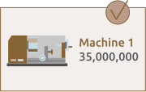

1. 판매 기계 등록
간단하게 판매기계 정보를 무료로 등록합니다.

2. 등록 기계 상담
정확한 기계 정보입력, 적절한 판매금액 선정은 빠른 기계 판매에 가장 중요한 사항입니다.3. 기계 상태 체크
온라인 기계평가, 오프라인 성능 검사 등 중고기계 거래의 문제를 최소화화고, 정상적인 판매를 위한 기계 상태 체크를 합니다.4. 무료 판매 광고 시작
많은 기계 관계자들이 이용하는 머신박스 광고는 물론, 페이스북, 인스타그램, 이메일, SMS, 블로그, 카페에 쉽게 연결하여 광고할 수 있습니다.5. 미팅 및 판매
판매가 완료 될 때 까지 구매자와 판매자를 지속적으로 연결하며, 현장방문 미팅 및 후속 조건에 대한 협상을 머신박스에서 도와드립니다.온라인 스마트 안전계약은 간편하고, 안전하게 머신박스가 중개자로 참관하고, 계약서를 준비해드립니다. 현장방문, 협상, 계약서작성, 매매대금입금 머신박스에서 전 과정을 도와드립니다.


6. 배송 및 리뷰
머신박스의 배송대행서비스(상하차, 배송, 설치/해체)를 통해 편하고, 저렴하게 기계를 받을 수 있습니다. 기계 인도 완료 후에 기계매매대금이 판매자에게 전달됩니다.판매자를 5가지 항목(A/S조건, 기계상태, 신뢰성, 재구매의사, 친절성)으로 평가할 수 있습니다.
평가는 다른 구매자들이 판매자를 선택하는데 큰 도움이 됩니다.